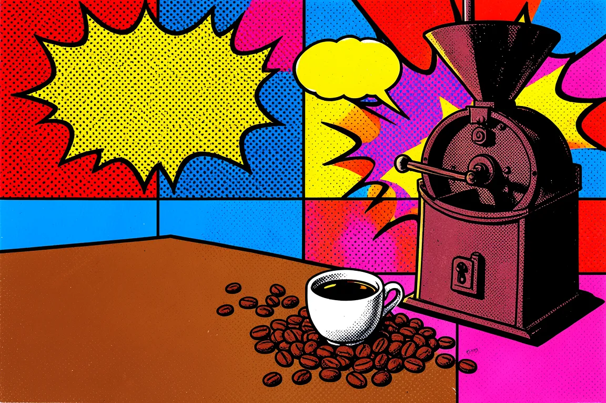

graphic movement · 1956–1975 · also: Pop style, Warhol style, Comic-dot style
Flat, saturated colour, thick outlines, halftone dots and repeated mass-media images. It came from Britain and the USA in the 1950s and 1960s and treats advertising and comics as high art.

Core thesis
Mass culture is the subject: the comic, the ad and the label become art when you make them big, flat and loud.
Design principles
Use 4 saturated colours at most on a page (red, yellow, blue and one of pink or cyan) and black outlines of 3px to 5px.
Make halftone dots with a 6px to 10px pitch at 100% opacity as a fill for backgrounds and shadows.
Repeat an image 2 to 4 times in a grid, each copy in a different colour set.
Set headlines in a heavy comic or poster face at 56px or larger with a 3px black outline or a hard 4px offset shadow.
Place speech bubbles and burst shapes (8 to 16 points) around calls to action.
Crop photographs hard and reduce them to 3 to 4 flat colours.
Keep copy short: headlines of 1 to 6 words and slogans in capitals.
Anti-patterns
Subtle gradients and soft shadows
Muted, earth-tone or pastel palettes
Thin, light-weight type
Photographic realism without flat colour reduction